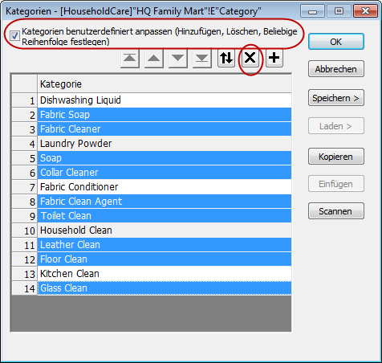
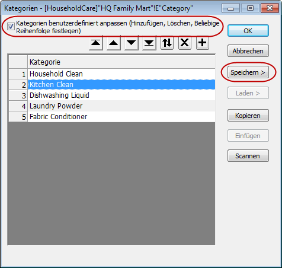
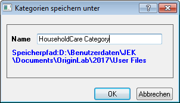
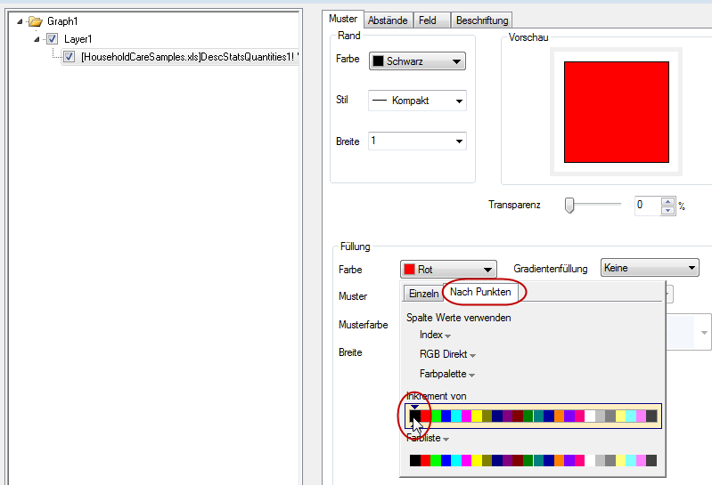
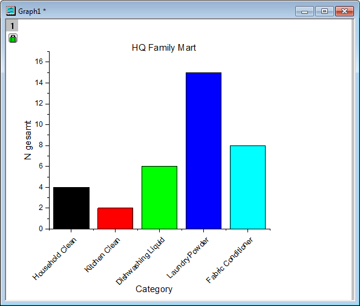
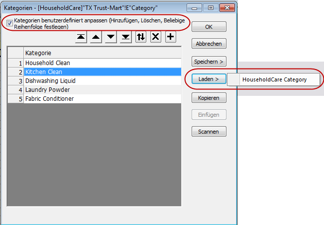
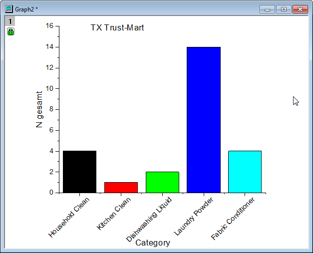

Categorical Values Ordering and Sharing
Categorical-Values-Ordering
Summary
Categorical values are used to store categories information in a column. In Origin, you have the capacity to manually add, remove, order categories in a column and the categorical information stored in the column will be carried over to result sheet during analysis. You can easily save categories into a text file and share across columns or worksheets.
Minimum Origin Version Required: Origin 2015 SR0
What you will learn
- How to manipulate categorical values
- How to order categorical map
- How to share categorical values
Manipulate Categorical Values
- To import the Origin sample data, select Data: Import from File: Excel(XLS, XLSX, XLSM...) from the Origin menu. Browse to <Origin Program Folder>\Samples\Statistics and select HouseholdCareSamples.xls. Click the Add File(s) button. Make sure that the Show Options Dialog: check box is selected. Click the OK button to open the impMSExcel dialog.
- Specify the following settings in the impMSExcel dialog:
- Under File Info, expand the HouseholdCareSamples.xls branch. Unselect File Sheet(s), then check the check boxes next to HQ Family Mart and TX Trust-Mart.
- In the Header Lines branch, select 1 in Number of Subheader Lines drop-down list and then 1 for Long Names. Check Apply Header to All Sheets box.
- Click OK to import the data into Origin.
- On the HQ Family Mart worksheet, highlight column Category (long name) and right click to select Set As Categorical. Double click on the Unsorted on Categories label row to bring up Categories dialog.
- Now we want to only keep Household Clean, Kitchen Clean, Dishwashing Liquid, Laundry Powder and Fabric Conditioner five categories and order them as listed. To do so, first check Customize Categories (Add, Delete, Set Arbitrary Order) box, hold Ctrl key to select unwanted categorical values and use Remove button
 to remove them.
to remove them.

- Drag the row headings or use the ,
 ,
,  and
and  buttons to reorder, as shown below:
buttons to reorder, as shown below:

- Then click Save > button and select Save As to bring up Categories Save as dialog. Enter HouseholdCare Category as Name and click OK to save the categorical values in a text file under displayed Save Path for sharing later.

- Click OK to close Categories dialog box.
- Next we want to know the total number of items in each of the five categories specified in step 4 and make a column plot of results. To do so, highlight column Number (long name) and go to Statistics: Descriptive Statistics: Statistics on Columns: Open Dialog... to bring up Statistics on Columns dialog, click right-sided triangle icon on Group row to select E(Y):Category as grouping column and click OK to close the dialog. In the prompt dialog, click OK.
- Switch to DescStatsQuantities1 flat sheet, select column N total (long name) and go to Plot: 2D: Bar: Column to create the column plot.
- Double click on the X axis tick labels to bring up Tick Labels page on Axis dialog, go to Format tab and select 45 from Rotate (deg.) drop-down list and click OK to close the dialog.
- Double click on the graph to bring up Plot Details dialog, expand Layer1 node to go to its subnode. In the Pattern tab, expand the Color drop-down list in the Fill group, select By Points tab, and choose the color Black under Increment from list to set it as the starting color. Click OK to close dialog.

- Right click on the page and select Fit Page To Layers... and click OK in the appeared dialog to bring the X axis label into page. Delete the legend, use Text tool to add HQ Family Mart as graph title. Move X axis title and added graph title to proper positions, and the column plot looks like the following:

Share Categorical Values
- Continue from the section above, now we want to share the categories saved earlier with second worksheet TX Trust-Mart. To do so, activate TX Trust-Mart sheet and highlight column Category (long name) and right click to select Set As Categorical.
- Double click on the Unsorted on Categories label row to bring up Categories dialog, check Customize Categories (Add, Delete, Set Arbitrary Order) box and click Load > button on the right and select appeared HouseholdCare Category file.

- Follow steps 7-12 in above section and add text TX Trust-Mart instead of HQ Family Mart in step 12, we will obtain a column plot from TX Trust Mart source sheet as following:
